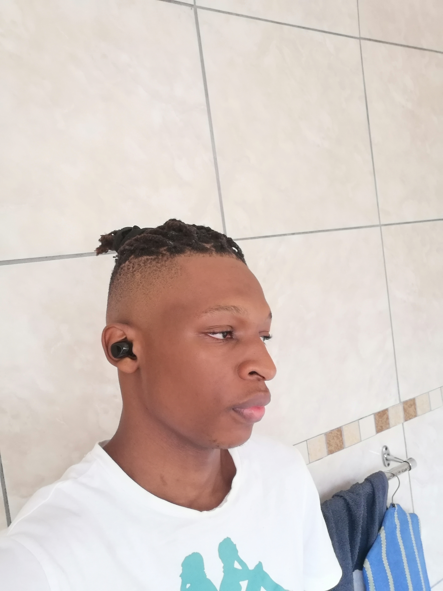

I am a hard working social individual who is always ready for any challenge individually or with a team. My interpersonal skills allow me to be efficient and competent with my fellow peers and seniors to ensure tasks are done on time whether under pressure or stressed. I am not afraid to ask for help, I am a cheerful person who despite being reserved is easy to approach. I am reliable, friendly, flexible, confident and goal driven.
Highschool Attended: ST Francis
Highest grade passed: Grade 12
Year: 2023
.
Tertiary Education Attended: SAE Institute
Degree Achieved: Bachelor of Arts in Game Design and Production
Year: ongoing
Intermediate Unity Experience
Novice Github Experience
Novice Unreal Engine Experience
Novice Blender Experience
Novice Krita Experience
Qualified Assessor
Good Social skills
intermediate UI/UX skills
Unity
Unreal Engine
Blender
Krita
HTML/CSS
Java Script
C#
My goals and aspirations for the near future after graduating from SAE Institute is to find employment as a Level Designer or Programmer on site.